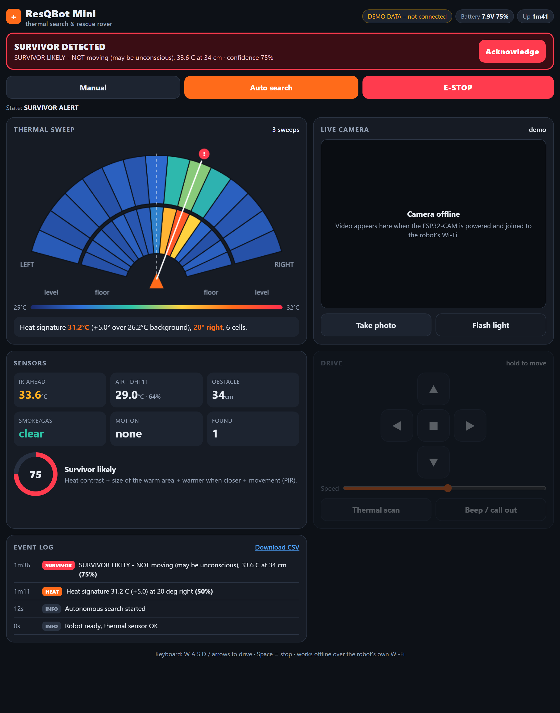
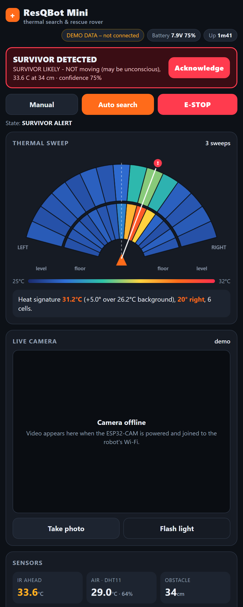

Finds the warmth under the rubble
A palm-sized robot built from common hobby parts. It sweeps a ₹759 infrared thermometer across the scene, finds body heat, drives up to the person, and calls the rescue team's phone, with no internet needed.
Every hour under rubble counts
Rescuers search dark, smoky and unstable spaces by hand, risking their own lives. The tools that see body heat cost tens of thousands of rupees or more, so the local teams who arrive first rarely have them.
The "golden" window: a trapped person's chances fall with every hour.
lives lost in the 2001 Gujarat (Bhuj) earthquake, many under collapsed buildings.
deaths in the 2023 Türkiye–Syria earthquakes, where searches went on for weeks.
One search, five steps
In Auto search mode the robot repeats this loop on its own. A rescuer can take over at any moment from the phone, and E-STOP always works.
Sweep
Two servos swing the IR sensor across 140° at floor and eye level: 30 readings in about 5 seconds.
Detect
A warm patch at least +1.5 °C over the scene, no hotter than 42 °C, covering 2+ cells.
Approach
It turns to the patch's bearing and creeps forward until it is 35 cm away.
Confirm
Did the reading get warmer up close? Is anything moving? It scores the clues 0–100.
Alert
At 60+ it parks beside the person with a flashing beacon and buzzer, and alerts the phone.
Try the confidence score
The same formula the robot runs. Movement is a bonus, not a requirement, so an unconscious person still triggers an alert while heaters, reflections and hot cups don't.
Built from parts any lab can buy
An Arduino Uno reads every sensor and runs the search logic. An ESP32-CAM adds live video, makes the robot's Wi-Fi and serves the phone dashboard. Each part is a standard module, so the robot can be repaired with parts from any electronics market.

- Thermal
- MLX90614 IR thermometer in a 25° tube on two SG90 servos
- Brain
- Arduino Uno: reads all sensors, runs the search, drives motors
- Camera
- ESP32-CAM: live video, Wi-Fi hotspot, dashboard, flash light
- Clues
- DHT11 air temperature and humidity, PIR for movement, HC-SR04 for distance
- Hazards
- MQ-2 smoke and gas alarm, > 55 °C hot-spot warning
- Drive
- 4WD BO-motor chassis, L298N driver, 2S Li-ion pack
- Marker
- Bright LED beacon and buzzer that stay with the survivor
Any phone is the control room
Join the robot's Wi-Fi and open 192.168.4.1. No app, no internet, no cloud: the dashboard lives inside the robot's firmware, so it works where mobile networks are down.


What it costs
Online prices checked on 9 October 2026 (incl. GST, shipping extra). The full shopping list with a buy link for every part is in the components PDF.
| Group | Main parts | ₹ |
|---|---|---|
| Brain + camera | Arduino Uno, ESP32-CAM, programmer | 1,214 |
| Sensors | MLX90614, DHT11, HC-SR04, PIR, MQ-2 | 1,095 |
| Drive + head | 4WD chassis, L298N, 2 servos, bracket | 1,005 |
| Power | 2S Li-ion pack, DC jack, LM2596, switch | 736 |
| Small parts | Buzzer, LED, 2 transistors, resistors, capacitors, diode, fuse | 103 |
| Wiring | Jumpers, zero PCB, headers, bolts, heat-shrink | 531 |
| Total | 27 parts, all new | 4,684 |
Safe for everyone on site
The robot is a scout and decision aid. It goes in first so people go in where it matters.
Survivors
Crawls slowly near people and stops 35 cm away. Forward driving is blocked below 12 cm even in manual mode. Light and sound tell the person help is near.
Rescuers
Smoke, gas and fire hot-spot warnings before anyone enters. Live video and the heat map cut blind entries. The beacon marks where to dig.
The robot
E-STOP from the phone, a dead-man stop when commands stop, and a low-battery stop at 6.8 V that protects the Li-ion cells.
A "no survivor" result never clears a space on its own. The robot is not intrinsically safe and must not enter explosive atmospheres.
Documents
Proposal, build guide, wiring, test plan and the full parts list. The firmware, dashboard and test code are in the project package.